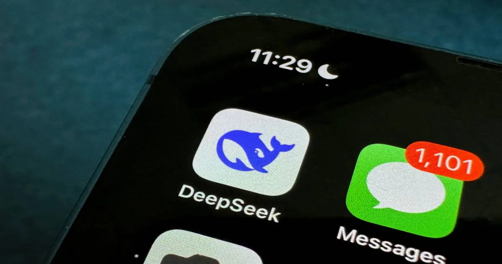

Сообщается, что DeepSeek поднимает $ 15B ЧЕРЕЗ 15 дней после ограничений в США
Сообщается, что DeepSeek привлекла $ 15 млрд в одном из крупнейших раундов финансирования в Китае, всего через несколько дней после того, как США приказали федеральным агентствам удалить свои технологии из-за проблем национальной безопасности.